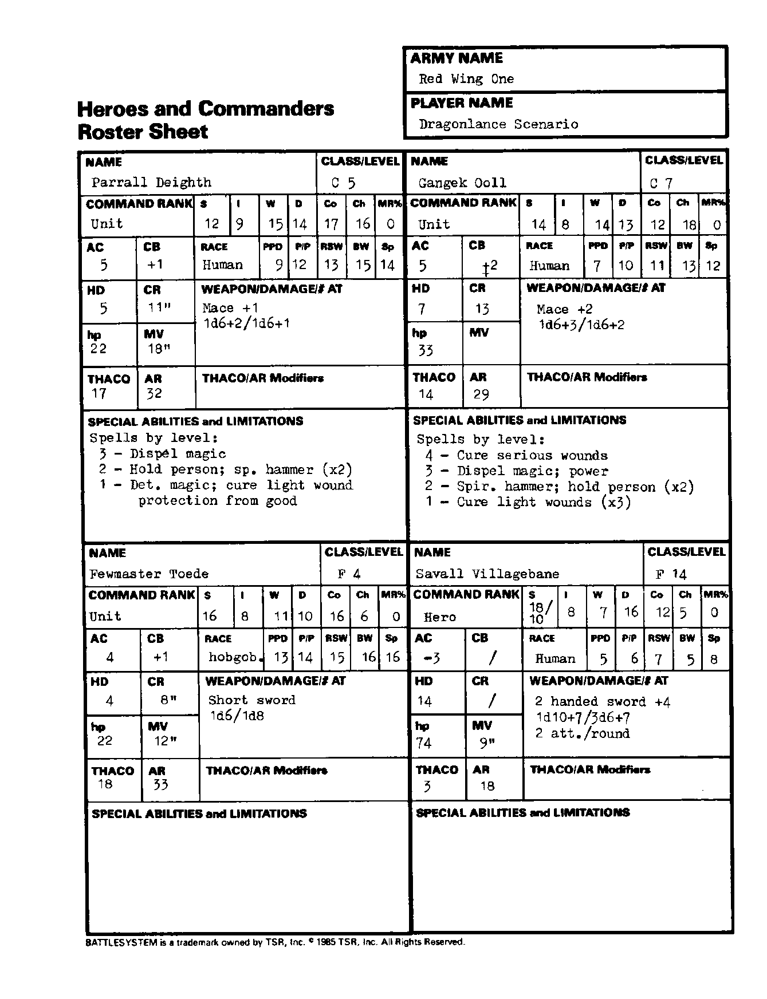

第一红翼 Red Wing One：英雄与指挥官
能力值顺序：力量／智力／感知／敏捷／体质／魅力。五项豁免依次为麻痹·毒素·死亡魔法／石化·变形／法杖·法棒·魔杖／吐息／法术。移动与指挥半径以桌面英寸计；“—”表示原卡空白或不适用。武器两种伤害分别针对 S/M 与 L 目标；特殊多次攻击另行注明。
帕拉尔·戴斯 Parrall Deigth
| 项目 | 数值 |
|---|---|
| 职业／等级 | 牧师 5 |
| 指挥职级 | 部队 |
| 六项能力值 | 12/9/15/14/17/16 |
| 种族 | 人类 |
| 魔法抗性 MR | 0% |
| 护甲等级 AC | 5 |
| 指挥加值 CB | 1 |
| 五项豁免 | 9/12/13/15/14 |
| 生命骰 HD | 5 |
| 指挥半径 CR | 11 |
| 生命值 hp | 22 |
| 移动率 MV | 18 |
| THAC0 | 17 |
| 攻击等级 AR | 32 |
| 武器／伤害／攻击次数 | 硬头锤 +1；1d6+2／1d6+1 |
| 特殊能力、限制与准备法术 | 三级：解除魔法；二级：人类定身、灵锤×2；一级：侦测魔法、治疗轻伤、防护善良。 |
甘格克·欧尔 Gangek Ooll
| 项目 | 数值 |
|---|---|
| 职业／等级 | 牧师 7 |
| 指挥职级 | 部队 |
| 六项能力值 | 14/8/14/13/12/18 |
| 种族 | 人类 |
| 魔法抗性 MR | 0% |
| 护甲等级 AC | 5 |
| 指挥加值 CB | 2 |
| 五项豁免 | 7/10/11/13/12 |
| 生命骰 HD | 7 |
| 指挥半径 CR | 13 |
| 生命值 hp | 33 |
| 移动率 MV | 9 |
| THAC0 | 14 |
| 攻击等级 AR | 29 |
| 武器／伤害／攻击次数 | 硬头锤 +2；1d6+3／1d6+2 |
| 特殊能力、限制与准备法术 | 四级：治疗重伤；三级：解除魔法、强力术（Power，原卡简称）；二级：灵锤、人类定身×2；一级：治疗轻伤×3。 |
少主托德 Fewmaster Toede
| 项目 | 数值 |
|---|---|
| 职业／等级 | 战士 4 |
| 指挥职级 | 部队 |
| 六项能力值 | 16/8/11/10/16/6 |
| 种族 | 大地精 |
| 魔法抗性 MR | 0% |
| 护甲等级 AC | 4 |
| 指挥加值 CB | 1 |
| 五项豁免 | 13/14/15/16/16 |
| 生命骰 HD | 4 |
| 指挥半径 CR | 8 |
| 生命值 hp | 22 |
| 移动率 MV | 12 |
| THAC0 | 18 |
| 攻击等级 AR | 33 |
| 武器／伤害／攻击次数 | 短剑；1d6／1d8 |
| 特殊能力、限制与准备法术 | — |
萨瓦尔·村祸 Savall Villagebane
| 项目 | 数值 |
|---|---|
| 职业／等级 | 战士 14 |
| 指挥职级 | 英雄 |
| 六项能力值 | 力 18/10；智 8；感 7；敏 16；体 12；魅 5 |
| 种族 | 人类 |
| 魔法抗性 MR | 0% |
| 护甲等级 AC | -3 |
| 指挥加值 CB | — |
| 五项豁免 | 5/6/7/5/8 |
| 生命骰 HD | 14 |
| 指挥半径 CR | — |
| 生命值 hp | 74 |
| 移动率 MV | 9 |
| THAC0 | 3 |
| 攻击等级 AR | 18 |
| 武器／伤害／攻击次数 | 双手剑 +4；1d10+7／3d6+7；每轮 2 次攻击 |
| 特殊能力、限制与准备法术 | — |
兵力卡原图
